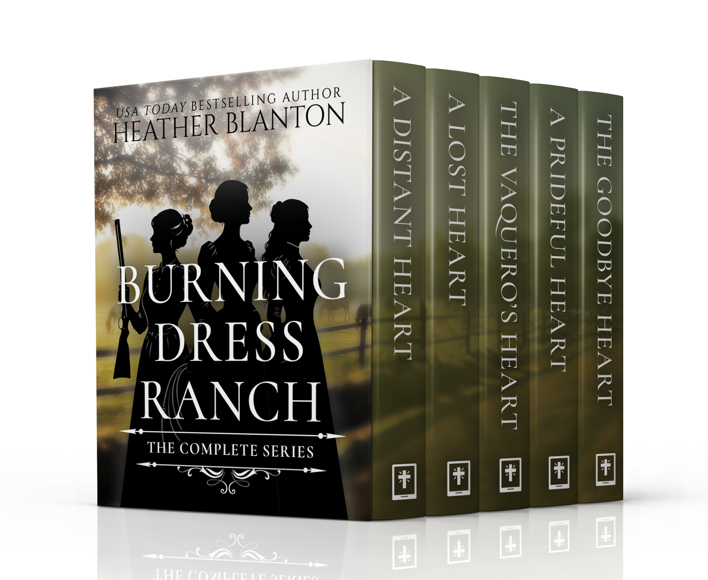
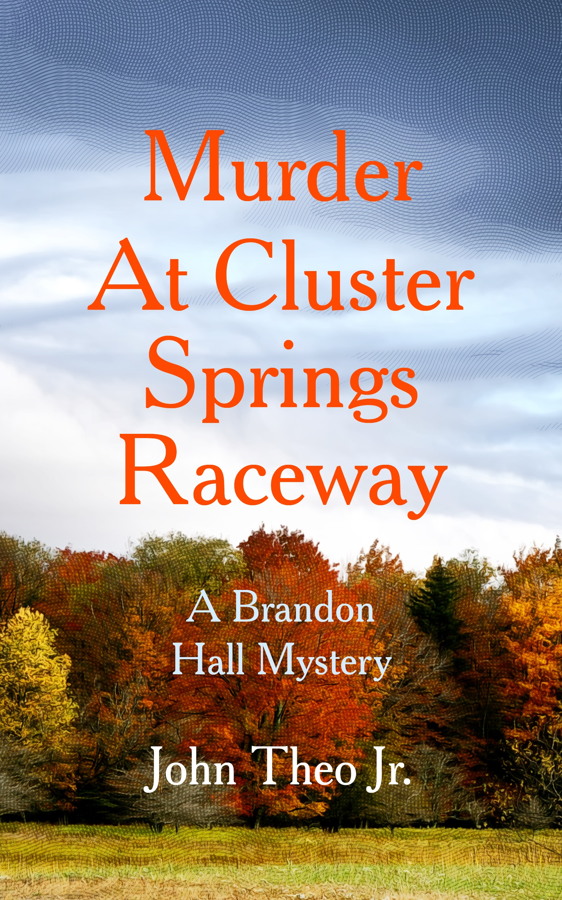
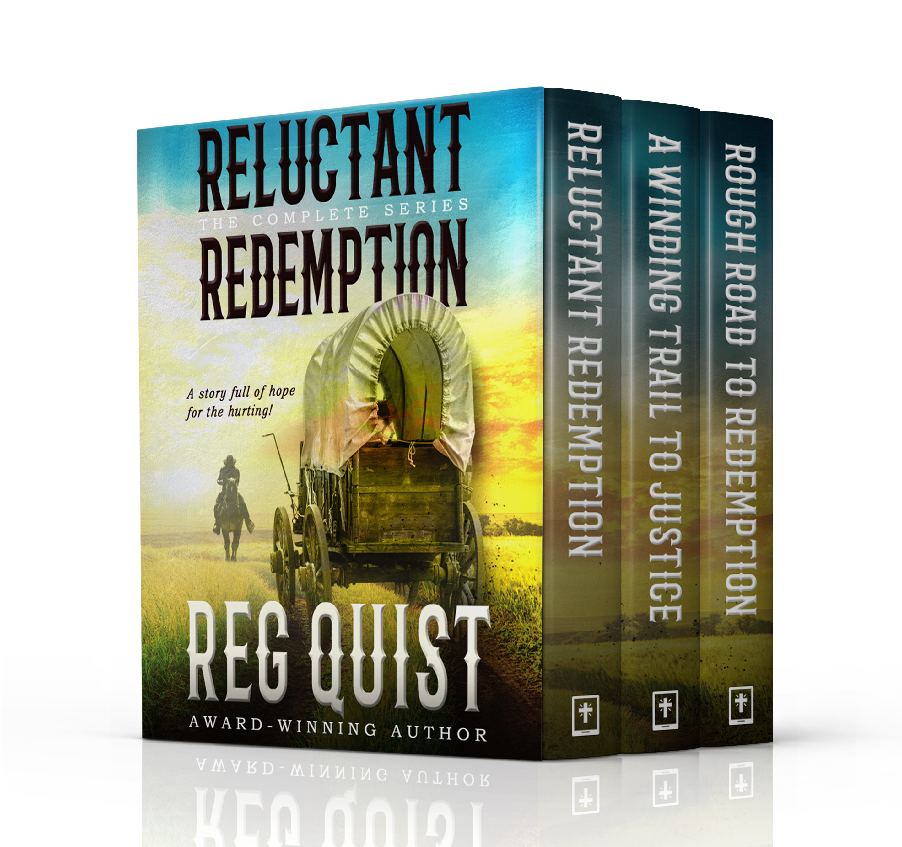

| View in browser |
 |
This Week's Christian Fiction DealsHope-filled stories for readers who want heart, conviction, and grace under pressure. |
|

Burning Dress Ranch: The Complete Seriesby Heather Blanton
Five broken hearts find healing at a windswept ranch where wounded souls arrive carrying scars and discover second chances. Across generations, guarded ranchers, fugitives, widows, and newcomers encounter grit, grace, faith, and the kind of love Miss Sally knows is coming. $4.99 $0.99
Get It for $0.99 →
|
| |

Murder at Cluster Springs Racewayby John Theo Jr.
A young driver's fiery death at a Virginia racetrack pulls veteran, farmer, and private investigator Brandon Hall into a politically charged murder case. His search connects the crash to violent radical groups while his family struggles to heal from a devastating loss. $3.99 $0.99
Get It for $0.99 →
|
| |

Reluctant Redemption: The Complete Seriesby Reg Quist
Civil War veteran Zac Trimbell leads neighbors and freed slaves west toward Colorado while battling trauma from the conflict. Across three Christian Westerns, his fierce sense of justice and search for the raiders who killed his family turn a hard road into a journey toward redemption. $4.99 $0.99
Get It for $0.99 →
|
|
CKN Christian Publishing 1707 E. Diana Street, Tampa, FL 33610 Website Unsubscribe |
|